|
|
| 当前位置：电脑报电子版 > 1999 年 > 27 期 > OA专刊 > 大题小作——用Premiere制作定格画面和透明底活动字幕 |
| 《 大题小作——用Premiere制作定格画面和透明底活动字幕 》 |
| 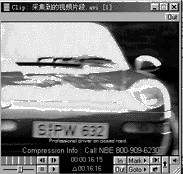Adobe
Premiere是目前广泛应用的非线性编辑软件,其界面直观、操作简便、功能强大，能够使影视制作人员的创造力在全新的多通道可视环境中得到淋漓尽致的发挥。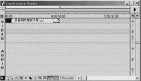但一些用户由于对软件功能发掘不深，本来轻而易举可以实现的效果却成为难题。本文拟对使用Premiere制作的两个小例子作简要介绍，技巧运用得好往往能起到事半功倍的作用。 一、制作定格画面 定格是影片特技摄影形成的画面，即放映中画面突然停止不动。定格画面大多起强调作用，使被摄画面引起观众注意。摄像机没有此项功能，而传统的编辑系统也必须通过特技台实现。非线性编辑系统的好处在于它可以一机多用，本例将用Premiere制作一辆汽车车牌号的定格画面，制作过程如下： （1）选择菜单File\Capture\Movie Capture，通过录像机将视频图像采集进计算机，取名“采集到视频片段.avi”后存盘； 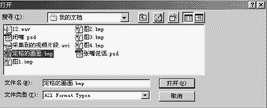（2）选取菜单File\Open打开所采集视频“采集到视频片段.avi”，利用“卷屏条”或“单帧前进后退”按钮选定要定格的画面，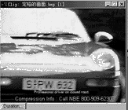记下它所在帧数（也即该帧所在的时刻），并点取“Out”标记“出点”，如图1所示，本例中选择00:00:16:15这一时刻的画面作为要定格的画面。选取菜单File\Export\Frame as取名“定格的画面.bmp”后将要定格画面存盘； （3）将鼠标移到Clip窗口的画面部分上方，鼠标箭头将变成一个手形，按下鼠标左键拖动鼠标至Construction Window（布景窗口）的视频轨道A上，就可将定格前的部分抓取到Construction Window的视频轨道A上，关闭Clip窗口，如图2所示； 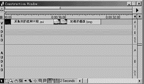（4）选取菜单File\Open打开所存定格画面，如图3、图4所示，用第(3)点的方法将其抓取到Construction Window的视频轨道A上，然后拉长为需要定格的时间长度，拖动使之与定格前的部分紧贴，如图5所示； 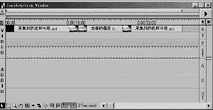 （5）重新打开所采视频，利用刚才记下的帧数找到定格画面，点取In标记“入点”，播放到最后，点取Out标记“出点”，将其抓取到Construction Window的视频轨道A上，拖动使之与定格画面紧贴，如图6所示； （6）拉长黄色工作区条，使之覆盖整个所编辑的内容； （7）选取菜单Make\Make movie，作有关设置后生成以.avi格式保存的影片，如图7所示，如果有条件，还可以联机将生成的影片录制到录像带上。对生成的影片你可以播放着看看，在这辆红色汽车开过来，车牌号最清晰时，画面将停一段时间，这个时间就是您先前设置的需要定格的时间，之后画面继续播放。 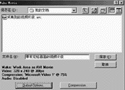由上面的描述可以看到，制作定格画面的实质就是将影片中需要定格的一帧画面处插入持续一段时间的该画面，然后继续播放该帧后面的画面。 二、制作透明底活动字幕 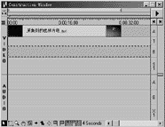 所谓透明底活动字幕，就是在画面上叠加运动的字幕，字幕本身有背景，但透过字幕的背景可以看到底画面的内容。为画面叠加透明底活动字幕，可以使画面更加生动，字幕更加突出。Premiere提供了Motions和Transparency两个高级创作窗口，使其更兼有了字幕机的功能。下面对其制作过程作简要说明： （1）首先把要叠加字幕的影片“采集到视频片段.avi”抓取到Construction窗口的视频轨道A上，如图8所示，当然放在视频轨道B上也是可以的； 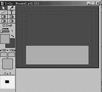（2）选取菜单File\New\Title打开Title窗口，点取左上角的“a”按钮图标，从出现的菜单中选取Options打开Title Display Option窗口（如图11所示），定义Drawing Size为320×240，设定Background为R=G=0,B=255即纯蓝底，点取“Ok”按钮退出。这时我们发现，Title窗口的字幕区的底色成为了蓝色； 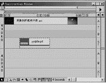（3）选择实体矩形工具，选取前景颜色为R=166，G=168，B=255，绘制一个适当大小的矩形，并用鼠标将其拖放到合适的位置，如图9所示。这个矩形就是将来的透明底，颜色为浅灰。当然你可以根据需要设定这个透明底颜色，至于使用什么颜色效果最好，你可以反复试验； （4）选取文字工具，选择理想的前景和阴影颜色以及字体、大小等文本特征，然后键入字幕“Premiere”并拖放到浅灰色矩形块上；本例中笔者键入的是英文字幕，这是因为笔者使用的Premiere不支持汉字输入，生成透明底活动汉字字幕的方法将在下面介绍。 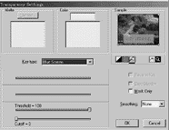（5）取名“yyqtitle.ptl”(.ptl是Title文件的特定后缀)后存盘，将其抓取到Construction Window的S1重叠轨道上，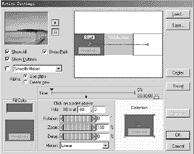放置在合适的位置并拉长为所需要的时间长度，如图10所示。如果你的Premiere版本不能支持汉字，利用Title窗口中的文字工具就无法输入汉字，您可以在Photoshop或“画图”等应用程序中将字幕制作成.BMP、.PSD、.TG A等图形文件调入使用。当然，在制作充当汉字字幕的图形文件时，为了获得与本文所述相同的效果，在颜色设置上应依照前面制作yyqtitle.ptl的设置进行。 （6）在S1轨道上右键单击字幕文件，从弹出的快捷菜单中点取Transparency菜单项（或点取Clip菜单下的Transparency菜单项）打开Transparency Setting窗口,设定Key Type为Blue Screen即以蓝底抠像，这就是字幕底色设为纯蓝的原因。此时点取右上角的翻页标志就可以从示范窗口中预览其效果，蓝底消失，矩形透明现出要叠加的画面成为透明底字幕，如图11所示。点取OK确认设置，此时擦抹区显示为浅蓝色，表示抠像已经起作用； 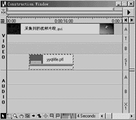（7）在S1轨道上右键单击字幕文件，从弹出的快捷菜单中选取Motion菜单项（或点取Clip菜单中的Motion菜单项）打开Motion Setting窗口，在左下角Fill Color窗口下的示范窗口中选取底色（这一步非常关键，请试验如不选底色将是什么效果），在本例中将其设置为蓝色，然后进行有关运动设置，可以通过改变字幕画面的start和end位置来改变透明字幕的运动方式。设置时可以从左上角的示范窗口中预览其效果，如图12所示。最后点取OK确定，此时字幕文件下出现一条红线，如图13所示，表示所设运动已经起作用； （8）拖动黄色工作区条使之覆盖所有编辑内容，选取菜单Make\Make Movie，进行有关设置后生成影片，最后联机录制到录像带上即可。 生成影片后，你可以播放一遍以检验制作效果。播放时，你会发现浅灰色底的透明字幕沿着您设置的运动路径运动，字幕运动的同时，作为字幕背景的影片画面仍在继续播放着，而且，透过字幕的浅灰色背景，可以看到底画面的内容。 完成上面的操作后，您就已经掌握了制作定格画面和透明底活动字幕的方法了。文中对一些设置介绍的较简单，如果您有兴趣的话，可以改变一下“Transparency Settings”窗口和“Motion Settings”窗口的其他选项，看看会有什么特别的效果。 (天津 杨玉琦) |
| 下载本期推荐软件 | 页 首 |
| 《电脑报》版权所有，电脑报网站编辑部设计制作发布 |